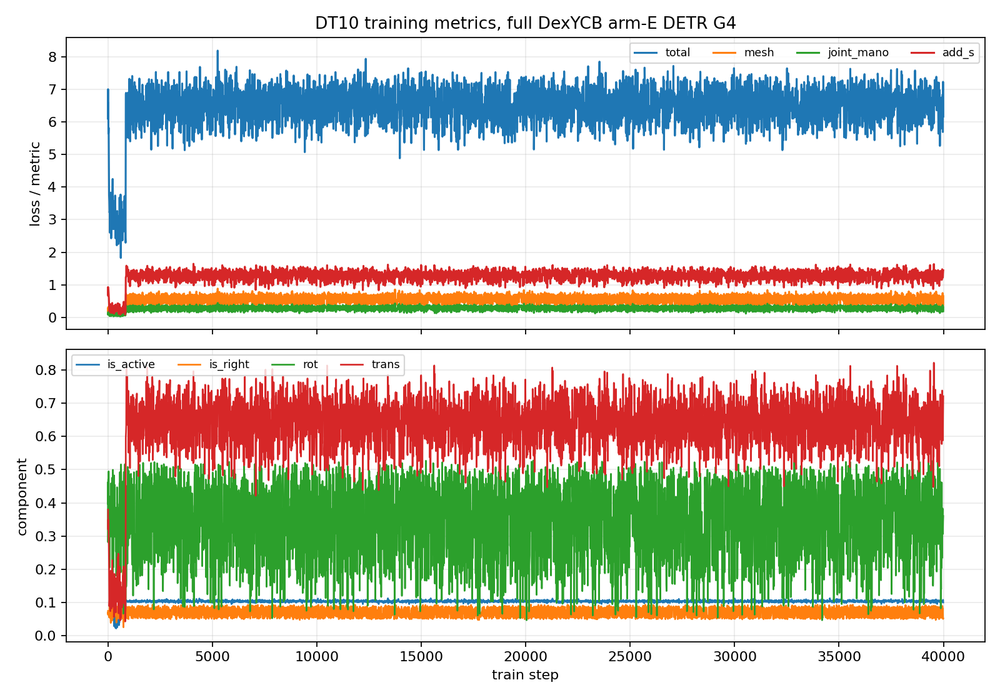
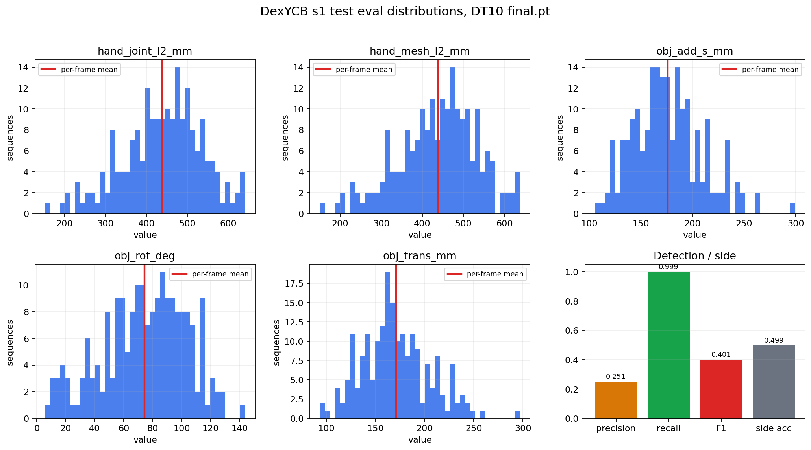
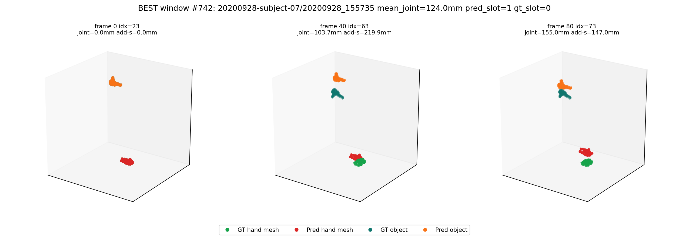
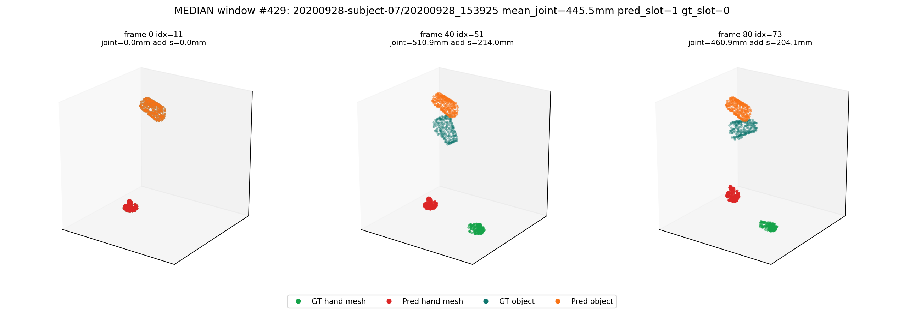
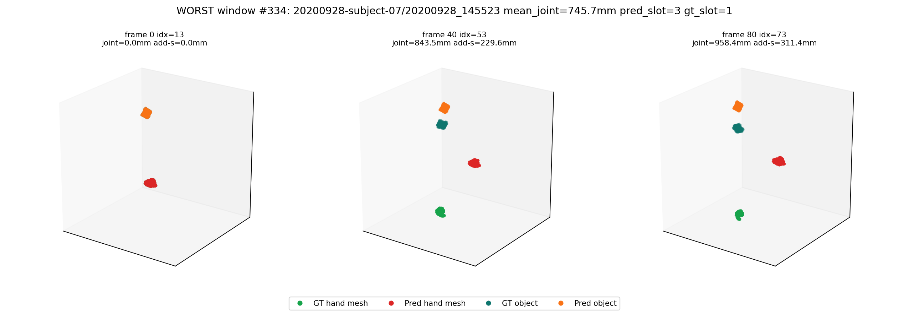

DT10 full DexYCB arm-E DETR G4 checkpoint: train succeeded, full DexYCB s1 test eval failed and was published with visualizations.
| Task | Status | Commit | What landed |
|---|---|---|---|
| DT10-TRAIN | PASS | 7525fd0 | ACP job pt-tk4h1q92 completed 40k-step quota-limited 4-GPU full DexYCB training and wrote final.pt. |
| DT10-DEXYCB-S1-EVAL | PASS | 7525fd0 | Ran full DexYCB s1 test eval over 1600 windows with clip_len=81 and n_max=4. |
| DT10-VIS | PASS | Generated train curves, eval distribution plots, and best/median/worst pred-vs-GT mesh/object visualizations. |
hand_joint_l2=438.93 mm, hand_mesh_l2=437.53 mm, obj_add_s=175.92 mm.
The eval counted 6400 detected slots for 1600 GT hands; precision=0.2511, recall=0.9995, F1=0.4014.
hand_side_acc=0.4988 (798/1600).
| SHA | Type | Subject |
|---|---|---|
| 7525fd0 | remote-code | fix(cache): convert DexYCB pose_m[3:48] PCA-45 -> AA-45 |
| 8af64f3 | local-docs | current local docs mirror before DT10 eval publish |
| Aspect | Current state |
|---|---|
| Remote eval command | p2_eval_thfm_lora.py --ckpt final.pt --manifest manifests/dexycb_s1_test_multicam.json --dataset dexycb --clip-len 81 --n-max 4 |
| Remote outputs | logs/v2ablate/full_dexycb_armE_detr_g4/seed0/eval_s1_test_final / metrics.json / predictions.pt / publish_assets |
| Verdict | FAILED: DexYCB s1 test eval did not meet useful reconstruction quality; errors are hundreds of mm and detection precision is low. |
| Task | Priority | What's needed |
|---|---|---|
| DT10-FAILURE-DIAGNOSIS | P0 | Diagnose why full DexYCB generalization failed despite DT9 1-seq overfit passing; start with active-slot threshold/calibration and train-vs-eval distribution mismatch. |
| DT11-HOT3D-ZERO-SHOT-EVAL | P1 | Defer HOT3D zero-shot eval until the DexYCB s1 failure is understood or the user explicitly wants a failure-mode HOT3D run. |
The quota-limited 4-GPU training run reached 40k steps and wrote final.pt, but full DexYCB s1 test eval shows reconstruction-quality failure: hand joint and mesh errors are hundreds of millimeters, detection precision is low, and side classification is near chance.
| Metric | Mean | Median | P5 | P95 | N |
|---|---|---|---|---|---|
| hand_joint_l2_mm | 438.93 | 448.24 | 130.71 | 698.40 | 129600 |
| hand_mesh_l2_mm | 437.53 | 447.23 | 130.00 | 695.31 | 129600 |
| obj_add_s_mm | 175.92 | 170.35 | 17.43 | 394.17 | 129600 |
| obj_rot_deg | 74.28 | 70.96 | 0.71 | 174.84 | 129600 |
| obj_trans_mm | 170.84 | 159.86 | 17.18 | 389.37 | 129600 |
Detection: precision 0.2511, recall 0.9995, F1 0.4014; side accuracy 0.4988 (798/1600).


Green = GT hand mesh, red = predicted hand mesh, teal = GT object, orange = predicted object. Predictions are frame-0 aligned to GT for visual comparability, matching the frame-0-relative evaluation contract.



logs/v2ablate/full_dexycb_armE_detr_g4/seed0/eval_s1_test_finallogs/v2ablate/full_dexycb_armE_detr_g4/seed0/eval_s1_test_final/predictions.pt (7.2GB, intentionally not uploaded to Pages).Paste this into a new Claude Code session:
Read https://haonanhe.github.io/HOI3R-project-tracking/updates/2026-05-04-session-summary-dt10-full-dexycb-s1-eval-failed.json and continue from tasks_pending[0] (DT10-FAILURE-DIAGNOSIS [P0]: Diagnose why full DexYCB generalization failed despite DT9 1-seq overfit passing; start with active-slot threshold/calibration and train-vs-eval distribution mismatch.). Context: branch feat/dcf@7525fd0; worktree /mnt/afs/haonan/hoi3r/HOI3R/.worktrees/feat-dcf. Also read: docs/superpowers/specs/2026-05-01-mano-regression-head-wan22-design.md, docs/superpowers/plans/2026-05-01-mano-detr-multi-hand-impl.md.